한국사능력검정시험-심화 (2015-01-24 기출문제)
1. 다음 자료의 집터가 처음 만들어졌던 시대의 모습으로 옳은 것은? [2점]
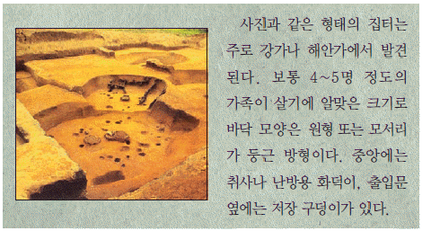
- 거친무늬 거울을 사용하였다.
- 지배자의 무덤으로 고인돌을 만들었다.
- 거푸집을 활용하여 청동기를 제작하였다.
- 금속제 무기를 사용하여 정복 활동을 벌였다.
- 가락바퀴와 뼈바늘을 이용하여 옷을 만들었다.
(정답률: 94%)

2. 밑줄 그은 ‘이 나라’에 대한 설명으로 옳은 것은? [2점]
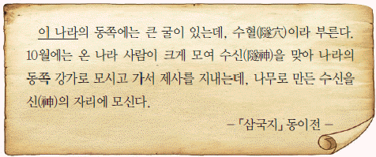
- 무천이라는 제천 행사가 있었다.
- 가(加)들이 별도로 사출도를 다스렸다.
- 제가 회의에서 중요한 일을 결정하였다.
- 제사장인 천군과 신성 지역인 소도가 있었다.
- 사회 질서를 유지하기 위해 8조법을 만들었다.
(정답률: 53%)
3. 밑줄 그은 (ㄱ)의 상황 이후 일어난 사실로 옳은 것을 <보기>에서 고른 것은? [2점]
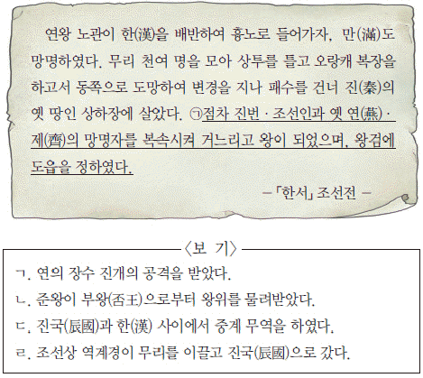
- ㄱ, ㄴ
- ㄱ, ㄷ
- ㄴ, ㄷ
- ㄴ, ㄹ
- ㄷ, ㄹ
(정답률: 41%)
4. (가), (나) 지역에 있었던 가야 소국에 대한 설명으로 옳은 것은? [1점]
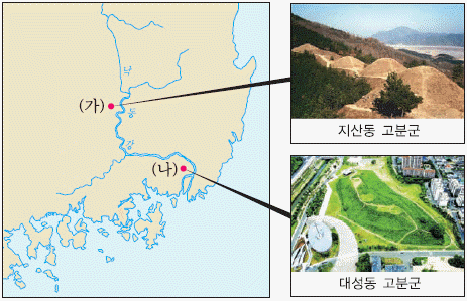
- (가) - 전기 가야 연맹을 주도하였다.
- (가) - 박, 석, 김의 3성이 교대로 왕위를 계승하였다.
- (나) - 신라 진흥왕에 의해 정복되었다.
- (나) - 고구려군의 공격으로 세력이 약화되었다.
- (가), (나) - 이사금이라는 지배자 칭호를 사용하였다.
(정답률: 71%)
5. (가) 인물에 대한 설명으로 옳은 것은? [3점]
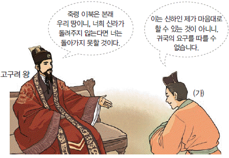
- 당을 몰아내고 삼국을 통일하였다.
- 성골 출신으로 왕이 된 마지막 인물이다.
- 자장의 건의로 황룡사 9층 목탑을 건립하였다.
- 김흠돌의 난을 진압하고 귀족들을 숙청하였다.
- 집사부의 설치를 건의하고 친당 외교를 주도하였다.
(정답률: 49%)
6. 밑줄 그은 ‘왕’의 재위 기간에 있었던 사실로 옳은 것을 <보기>에서 고른 것은? [2점]
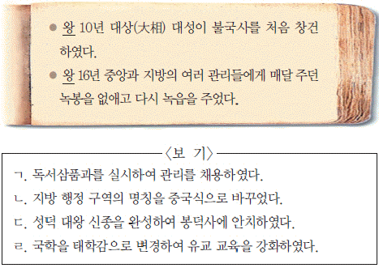
- ㄱ, ㄴ
- ㄱ, ㄷ
- ㄴ, ㄷ
- ㄴ, ㄹ
- ㄷ, ㄹ
(정답률: 32%)
7. (가), (나) 사이의 시기에 있었던 사실로 옳지 않은 것은? [2점]
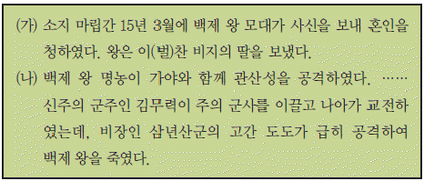
- 지증왕이 순장을 금지하였다.
- 진흥왕이 마운령에 순수비를 세웠다.
- 무령왕이 지방에 22담로를 설치하였다.
- 신라가 건원이라는 독자적인 연호를 사용하였다.
- 백제가 사비로 천도하고 국호를 남부여로 고쳤다.
(정답률: 42%)
8. (가)에 들어갈 불상으로 옳은 것은? [1점]
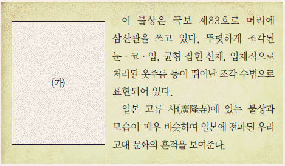
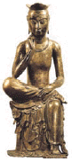
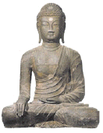
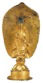
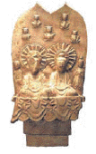
(정답률: 78%)
9. 다음 자료에 대한 설명으로 옳은 것은? [2점]
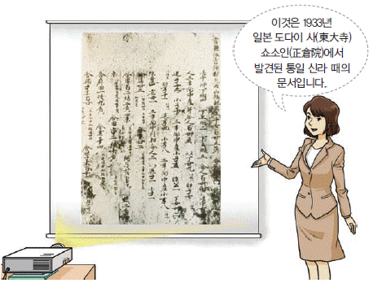
- 지방관의 근무 성적을 평가한 문서이다.
- 국가 물품을 생산하는 수공업자 명부이다.
- 이름을 적는 곳이 비어 있는 관직 임명장이다.
- 재산 상속과 분배에 대한 내용이 기록되어 있다.
- 호구를 남녀별·연령별로 구분하여 파악하였다.
(정답률: 76%)
10. (가)에 들어갈 교육 기관에 대한 설명으로 옳은 것은? [2점]
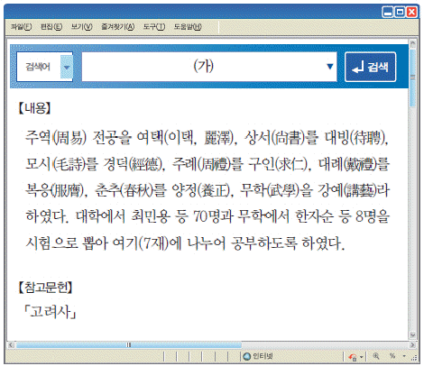
- 향음주례와 향사례를 주관하였다.
- 입학 자격은 생원, 진사를 원칙으로 하였다.
- 장학 기금을 마련하기 위해 양현고를 두었다.
- 전국의 부·목·군·현에 하나씩 설립되었다.
- 중앙에서 교관인 교수나 훈도가 파견되었다.
(정답률: 70%)
11. 밑줄 그은 ‘이 나라’에 대한 설명으로 옳지 않은 것은? [1점]
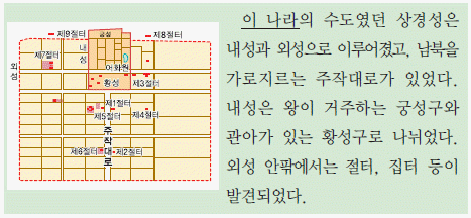
- 전성기에 해동성국이라 불렸다.
- 궁전 터에서 온돌 장치가 발견되었다.
- 고려 국왕을 표방하고 일본과 교류하였다.
- 정당성의 장관인 대내상이 국정을 총괄하였다.
- 지방 세력의 통제를 위해 상수리 제도를 실시하였다.
(정답률: 82%)
12. 밑줄 그은 ‘왕’의 재위 기간에 있었던 사실로 옳은 것은? [2점]
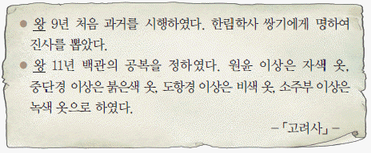
- 5도 양계의 지방 제도를 확립하였다.
- 별무반을 보내어 동북 9성을 개척하였다.
- 흑창을 처음 설치하여 민생을 안정시켰다.
- 광덕, 준풍 등의 독자적인 연호를 사용하였다.
- 2성 6부제를 토대로 중앙 통치 조직을 정비하였다.
(정답률: 78%)
13. (가) 인물의 활동으로 옳은 것은? [3점]
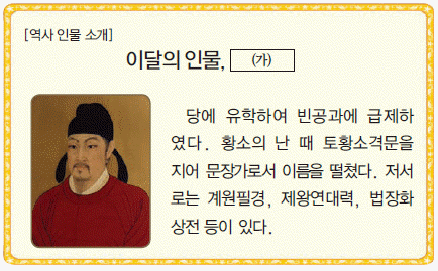
- 일심 사상과 화쟁 사상을 주장하였다.
- 진성 여왕에게 시무책 10여 조를 올렸다.
- 외교 문서를 전담하고 청방인문표를 작성하였다.
- 국왕에게 조언하는 내용의 화왕계를 저술하였다.
- 명망있는 승려의 전기를 기록한 해동고승전을 남겼다.
(정답률: 77%)
14. (가) 인물에 대한 설명으로 옳은 것을 <보기>에서 고른 것은? [3점]
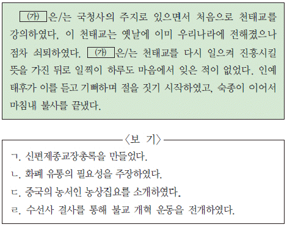
- ㄱ, ㄴ
- ㄱ, ㄷ
- ㄴ, ㄷ
- ㄴ, ㄹ
- ㄷ, ㄹ
(정답률: 50%)
15. (가)에 들어갈 내용으로 가장 적절한 것은? [1점]
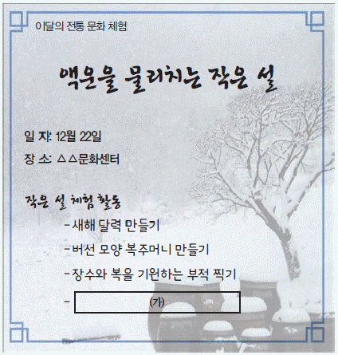
- 새알심 넣어 팥죽 만들기
- 창포 삶은 물에 머리 감기
- 소원 성취를 기원하는 달맞이하기
- 부스럼을 예방하기 위한 부럼 깨기
- 웃어른에게 세배를 하고 덕담 주고받기
(정답률: 48%)
16. 다음 두 사건의 공통점으로 옳은 것은? [2점]
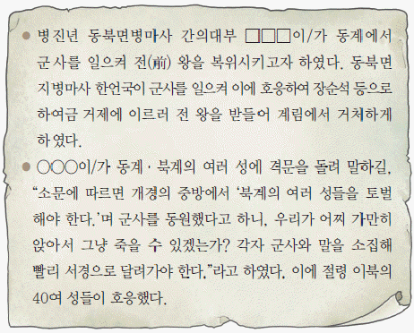
- 이자겸이 주도하였다.
- 서경 천도를 주장하였다.
- 무신 정권을 타도하려고 하였다.
- 고구려 부흥을 기치로 내세웠다.
- 강조의 정변이 원인이 되어 발생하였다.
(정답률: 40%)
17. 다음 역사서에 대한 설명으로 옳은 것은? [2점]
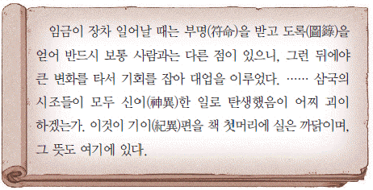
- 왕명을 받아 연대순으로 편찬하였다.
- 불교 중심의 고대 민간 설화를 수록하였다.
- 현존하는 우리나라 최고(最古)의 역사서이다.
- 고조선부터 고려 말까지의 역사를 정리하였다.
- 고구려 건국 영웅을 서사시 형태로 서술하였다.
(정답률: 44%)
18. (가)에 대한 설명으로 옳은 것을 <보기>에서 고른 것은? [2점]
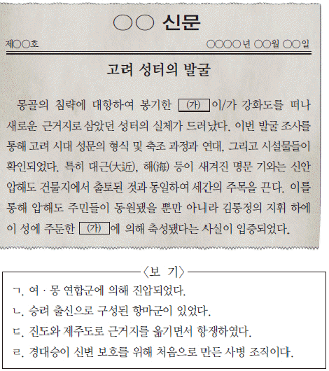
- ㄱ, ㄴ
- ㄱ, ㄷ
- ㄴ, ㄷ
- ㄴ, ㄹ
- ㄷ, ㄹ
(정답률: 57%)
19. 밑줄 그은 ‘왕’의 업적으로 옳은 것은? [3점]
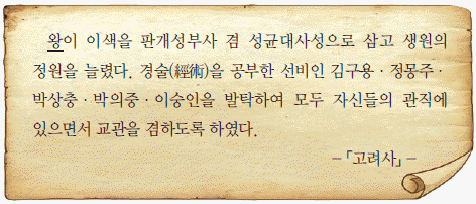
- 사림원을 설치하여 개혁을 실시하였다.
- 과전법을 공포하여 전제를 개혁하였다.
- 대장도감을 설치하여 재조대장경을 제작하였다.
- 정계와 계백료서를 지어 관리의 규범을 제시하였다.
- 친원 세력을 숙청하고 정동행성 이문소를 폐지하였다.
(정답률: 45%)
20. 다음 책에 대한 설명으로 옳은 것은? [2점]
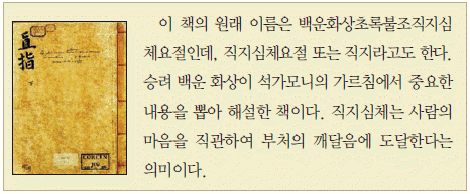
- 주자소를 설치하여 인쇄하였다.
- 신미양요 때 약탈된 문화 유산이다.
- 불국사 3층 석탑 안에서 발견되었다.
- 청주 흥덕사에서 금속 활자로 간행되었다.
- 세계 기록 유산으로 해인사에 보관되어 있다.
(정답률: 70%)
21. (가)에 들어갈 자료로 적절하지 않은 것은? [2점]
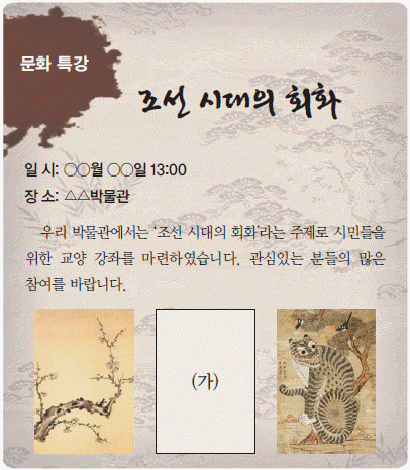
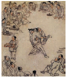
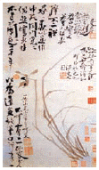
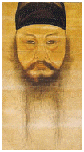
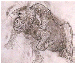
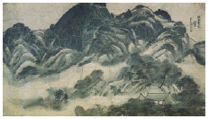
(정답률: 42%)
22. (가)~(다) 관리가 속한 관청에 대한 설명으로 옳은 것은? [2점]
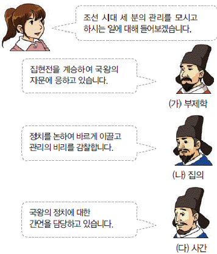
- (가) - 국왕 직속의 사법 기구이다.
- (나) - 부속 관청으로 교서관을 두었다.
- (다) - 장관으로 종2품 대사헌이 있었다.
- (가), (나) - 고려의 삼사와 같은 기능을 담당하였다.
- (나), (다) - 5품 이하 관리에 대해 서경권을 행사하였다.
(정답률: 65%)
23. (가)에 대한 설명으로 옳은 것은? [2점]
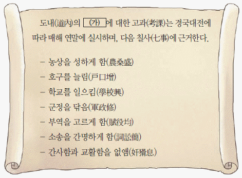
- 감사, 도백으로도 불렸다.
- 대대로 직역을 세습하였다.
- 유향소의 좌수로 향리를 규찰하였다.
- 임기는 함경도와 평안도를 제외하고 360일이었다.
- 국왕의 대리인으로 행정·사법·군사권을 행사하였다.
(정답률: 59%)
24. 지도에 표시된 지역을 개척한 국왕의 대외 정책으로 옳은 것은? [2점]
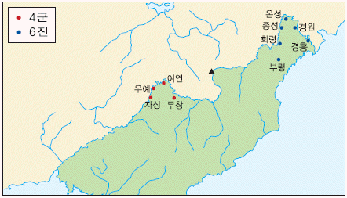
- 박위를 파견하여 대마도를 정벌하였다.
- 세견선에 관한 계해약조를 체결하였다.
- 북벌 정책을 추진하기 위해 어영청을 확대하였다.
- 박권을 보내 국경을 확정하는 백두산 정계비를 세웠다.
- 여진과의 무역을 위해 경원에 무역소를 처음 설치하였다.
(정답률: 51%)
25. 다음 자료가 원인이 되어 발생한 사건에 대한 설명으로 옳은 것은? [1점]
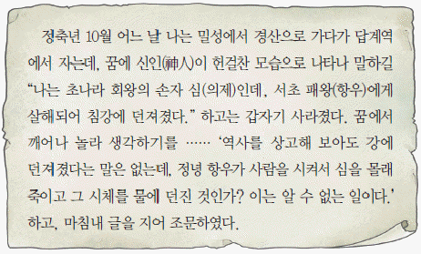
- 김일손 등의 신진 사류가 화를 입었다.
- 동인이 남인과 북인으로 나뉘게 되었다.
- 중전이 폐위되고 남인이 집권하게 되었다.
- 서인이 환국을 통해 권력을 독점하게 되었다.
- 현량과를 통해 등용된 신진 세력들이 희생되었다.
(정답률: 65%)
26. 밑줄 그은 ‘논쟁’에 대한 설명으로 옳은 것을 <보기>에서 고른 것은? [2점]
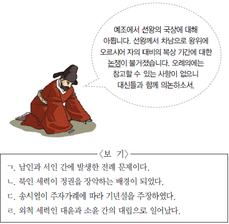
- ㄱ, ㄴ
- ㄱ, ㄷ
- ㄴ, ㄷ
- ㄴ, ㄹ
- ㄷ, ㄹ
(정답률: 77%)
27. (가) 인물의 활동으로 옳은 것은? [3점]
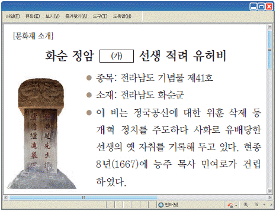
- 제왕학으로서 성학집요를 저술하였다.
- 소격서 폐지와 소학의 보급을 주장하였다.
- 기축봉사를 올려 명에 대한 의리를 내세웠다.
- 성학십도에서 군주의 도를 도식으로 설명하였다.
- 조선경국전을 저술하여 재상 중심의 정치를 강조하였다.
(정답률: 78%)
28. 밑줄 그은 ‘이 자료’에 대한 설명으로 옳지 않은 것은? [1점]
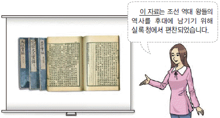
- 기전체 형식으로 서술되었다.
- 태조 왕대부터의 기록이 남아 있다.
- 사초와 시정기 등을 근거로 편찬되었다.
- 춘추관 관원들이 편찬 업무에 참여하였다.
- 임진왜란 이전에는 4대 사고에 보관되었다.
(정답률: 55%)
29. 다음 궁궐에 대한 설명으로 옳은 것을 보기에서 고른 것은? [3점]
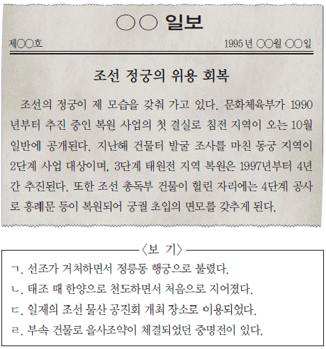
- ㄱ, ㄴ
- ㄱ, ㄷ
- ㄴ, ㄷ
- ㄴ, ㄹ
- ㄷ, ㄹ
(정답률: 30%)
30. (가), (나) 사이의 시기에 있었던 사실로 옳은 것을 <보기>에서 고른 것은? [2점]
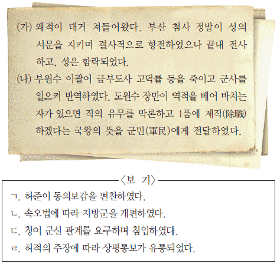
- ㄱ, ㄴ
- ㄱ, ㄷ
- ㄴ, ㄷ
- ㄴ, ㄹ
- ㄷ, ㄹ
(정답률: 48%)
31. 밑줄 그은 ‘이 제도’에 대한 설명으로 옳은 것을 <보기>에서 고른 것은? [1점]
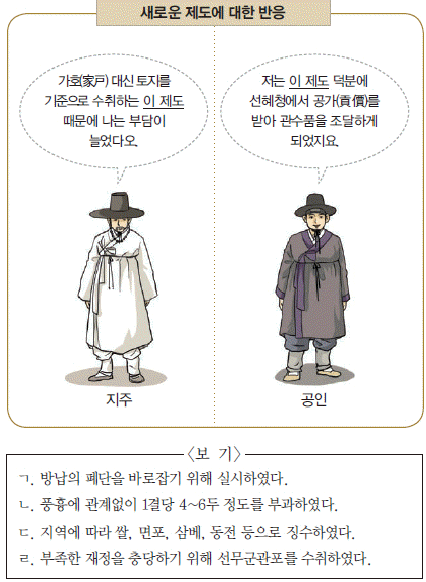
- ㄱ, ㄴ
- ㄱ, ㄷ
- ㄴ, ㄷ
- ㄴ, ㄹ
- ㄷ, ㄹ
(정답률: 62%)
32. 다음 책의 저자에 대한 설명으로 옳은 것은? [3점]
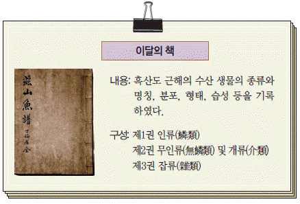
- 조선인 최초로 세례를 받았다.
- 신유박해에 연루되어 유배되었다.
- 북경에 다녀온 뒤 연행록을 남겼다.
- 100리 척을 사용한 지도를 제작하였다.
- 청으로부터 시헌력 도입을 건의하였다.
(정답률: 58%)
33. (가)에 대한 설명으로 옳은 것은? [2점]
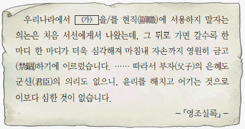
- 음서와 공음전의 혜택을 받았다.
- 양인 신분으로 천역에 종사하였다.
- 공장안에 등록되어 생산을 담당하였다.
- 소속 관청에 매년 신공(身貢)을 바쳤다.
- 정조 때 규장각 검서관으로 등용되었다.
(정답률: 65%)
34. 다음 글을 쓴 인물에 대한 설명으로 옳은 것은? [3점]
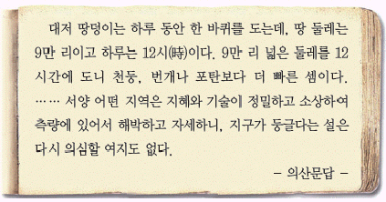
- 남북국이라는 용어를 처음 사용하였다.
- 오학론에서 성리학의 폐해를 지적하였다.
- 체질을 연구하여 사상 의학을 확립하였다.
- 양명학을 연구하여 강화학파를 형성하였다.
- 무한우주론을 근거로 화이의 구분을 부정하였다.
(정답률: 70%)
35. 다음 자료에 나타난 문제점을 해결하기 위해 흥선 대원군이 실시한 정책으로 옳은 것은? [1점]
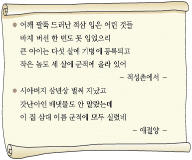
- 호포법을 제정하여 군포를 징수하였다.
- 5군영에서 2영으로 군제를 개편하였다.
- 양전 사업을 실시하여 지계를 발급하였다.
- 속대전을 편찬하여 국가 체제를 정비하였다.
- 초계문신제를 실시하여 관리를 재교육하였다.
(정답률: 77%)
36. (가)에 들어갈 역사적 사실로 옳은 것은? [2점]
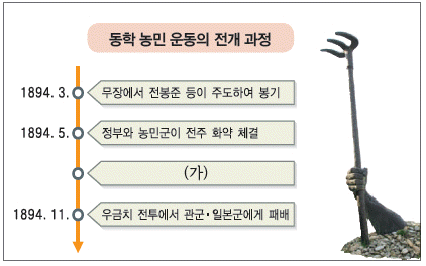
- 황룡촌 전투에서 농민군 승리
- 삼례에서 교조 신원 운동 전개
- 백산에서 농민군 4대 강령 발표
- 집강소를 설치하여 폐정 개혁안 추진
- 조병갑의 학정에 분노하여 고부 관아 습격
(정답률: 72%)
37. 다음 인물에 대한 설명으로 옳은 것은? [2점]
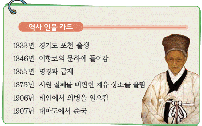
- 중추원 고문으로서 자주 독립을 강조하였다.
- 대동강에 침입한 제너럴 셔먼호를 불태웠다.
- 고종의 밀지를 받아 독립 의군부를 조직하였다.
- 지부복궐척화의소를 올려 왜양일체론을 주장하였다.
- 13도 창의군을 지휘하여 서울 진공 작전을 전개하였다.
(정답률: 57%)
38. 다음 논설에서 비판하고 있는 사건에 대한 설명으로 옳은 것은? [2점]
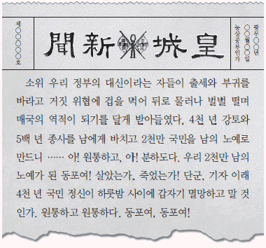
- 고종이 강제로 퇴위당하였다.
- 대한 제국의 외교권이 박탈되었다.
- 각 부서에 일본인 차관이 배치되었다.
- 스티븐스가 외교 고문으로 임명되었다.
- 사법권과 감옥에 관한 사무를 빼앗겼다.
(정답률: 69%)
39. (가)~(마) 시기에 일어난 역사적 사실로 옳은 것은? [2점]
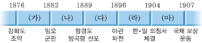
- (가) - 전환국이 설치되어 화폐 발행이 시작되었다.
- (나) - 고딕 양식의 명동 성당이 완공되었다.
- (다) - 최초의 상업 광고가 실린 한성주보가 발행되었다.
- (라) - 서울과 인천 사이에 철도가 최초로 개통되었다.
- (마) - 덕원 지방의 관민들이 원산학사를 설립하였다.
(정답률: 52%)
40. 밑줄 그은 ‘이 운동’에 대한 설명으로 옳은 것은? [1점]
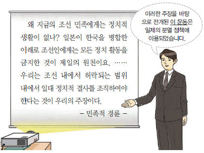
- 복벽주의가 이념적 바탕이었다.
- 보안법이 제정되는 계기가 되었다.
- 신민회가 해체되는 배경이 되었다.
- 이광수, 최린 등이 중심 인물이었다.
- 조선 혁명 선언을 행동 지침으로 삼았다.
(정답률: 43%)
41. 다음 인물의 활동으로 옳은 것은? [2점]
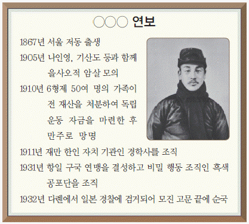
- 의열단을 창설하여 무장 투쟁을 전개하였다.
- 미군과 연계하여 국내 진공 작전을 추진하였다.
- 신흥 강습소를 설립하여 독립군을 양성하였다.
- 한국 독립군을 이끌고 대전자령 전투에 참여하였다.
- 중국 의용군과 연합하여 흥경성 전투를 지휘하였다.
(정답률: 63%)
42. (가)~(라) 지역에 대한 탐구 활동으로 적절한 것을 <보기>에서 고른 것은? [3점]
- ㄱ, ㄴ
- ㄱ, ㄷ
- ㄴ, ㄷ
- ㄴ, ㄹ
- ㄷ, ㄹ
(정답률: 38%)
43. 다음 자료에 나타난 두 운동의 공통점으로 옳은 것은? [1점]
- 신간회가 창립되는 계기가 되었다.
- 언론 기관을 중심으로 추진되었다.
- 경성 제국 대학이 설립되면서 중단되었다.
- 제4차 조선 교육령의 공포로 시작되었다.
- 전국적인 모금 운동과 더불어 진행되었다.
(정답률: 67%)
44. 다음 법령이 시행된 시기의 일제 정책으로 옳은 것은? [2점]
- 토지를 점탈하기 위해 토지 조사령을 공포하였다.
- 지하 자원을 약탈하기 위해 조선 광업령을 제정하였다.
- 일본식 성명을 강요하기 위해 조선 민사령을 개정하였다.
- 민족 자본의 성장을 억제하기 위해 회사령을 공포하였다.
- 조선 불교의 자주성을 말살하기 위해 사찰령을 제정하였다.
(정답률: 70%)
45. 다음 문화 활동에 대한 설명으로 옳은 것은? [2점]
- 가갸날을 제정하는 배경이 되었다.
- 조선사 편수회 설치의 계기가 되었다.
- 여유당전서를 간행하면서 제창되었다.
- 원각사를 설립하여 은세계를 공연하였다.
- 신경향파 문학이 대두하는 배경이 되었다.
(정답률: 40%)
46. 다음과 같이 국회가 구성되었던 시기의 사실로 옳은 것은? [2점]
- 내각 책임제와 지방 자치제가 실시되었다.
- 베트남 파병과 한·일 국교 정상화가 이루어졌다.
- 반민족 행위자 처벌법과 농지 개혁법이 공포되었다.
- 노후 생활 안정을 위해 국민 연금 제도가 도입되었다.
- 금융 실명 거래에 관한 법률과 공직자 윤리법이 제정되었다.
(정답률: 50%)
47. 다음 성명서가 발표된 시기를 연표에서 옳게 고른 것은? [2점]
- (가)
- (나)
- (다)
- (라)
- (마)
(정답률: 27%)
48. 다음 선언을 발표한 정부의 통일 노력으로 옳은 것은? [3점]
- 남북 조절 위원회를 구성하였다.
- 남북 기본 합의서를 채택하였다.
- 남북한이 유엔에 동시 가입하였다.
- 제2차 남북 정상 회담을 성사시켰다.
- 금강산 해로 관광 사업을 시작하였다.
(정답률: 24%)
49. (가)~(라)의 경제 상황을 일어난 순서대로 옳게 나열한 것은? [2점]
- (가) - (나) - (다) - (라)
- (가) - (다) - (라) - (나)
- (나) - (다) - (라) - (가)
- (나) - (라) - (다) - (가)
- (다) - (나) - (가) - (라)
(정답률: 75%)
50. (가)에 대한 탐구 활동으로 적절하지 않은 것은? [2점]
- 세종실록에서 지리지 부분을 검토한다.
- 대한 제국 칙령 제41호 문서를 조사한다.
- 병인양요 때 프랑스 군과 전투한 장소를 찾아본다.
- 숙종 때 안용복이 일본으로 건너간 배경을 살펴본다.
- 러·일 전쟁 때 일본이 불법으로 편입한 지역을 알아본다.
(정답률: 74%)